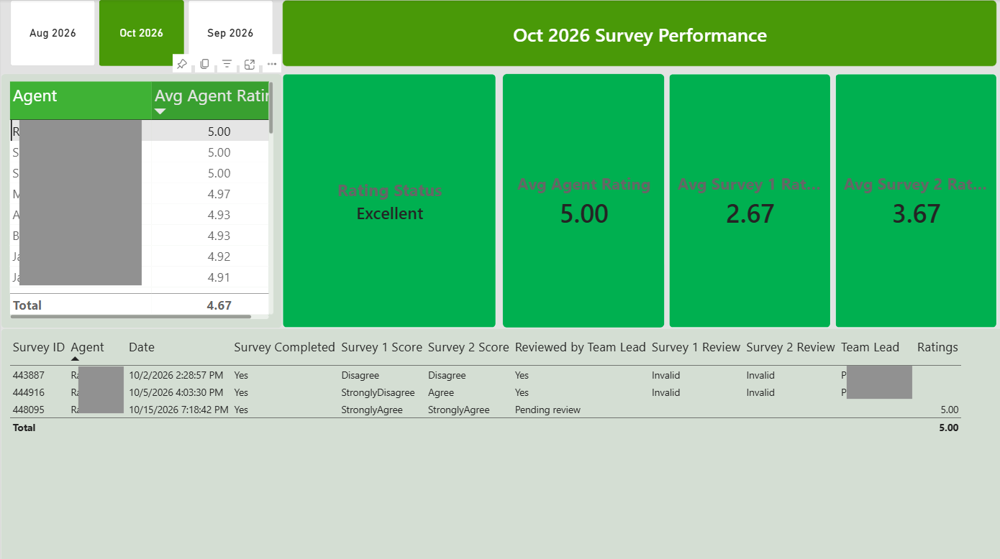
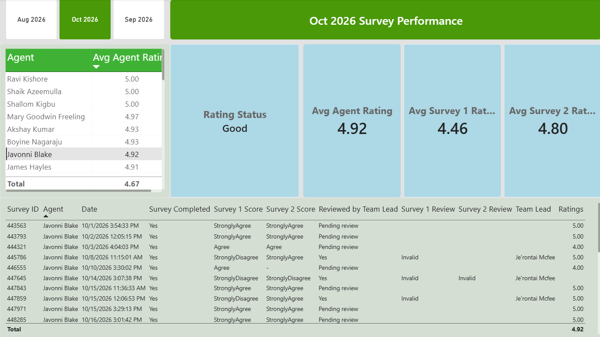
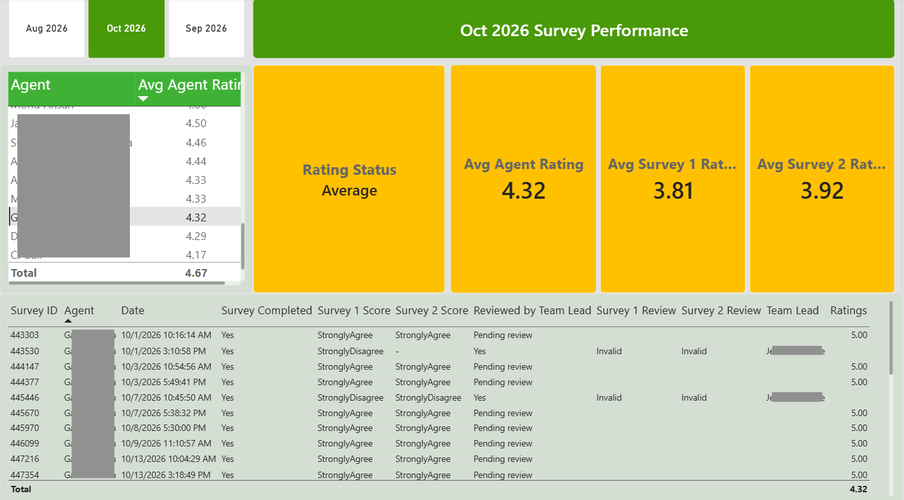
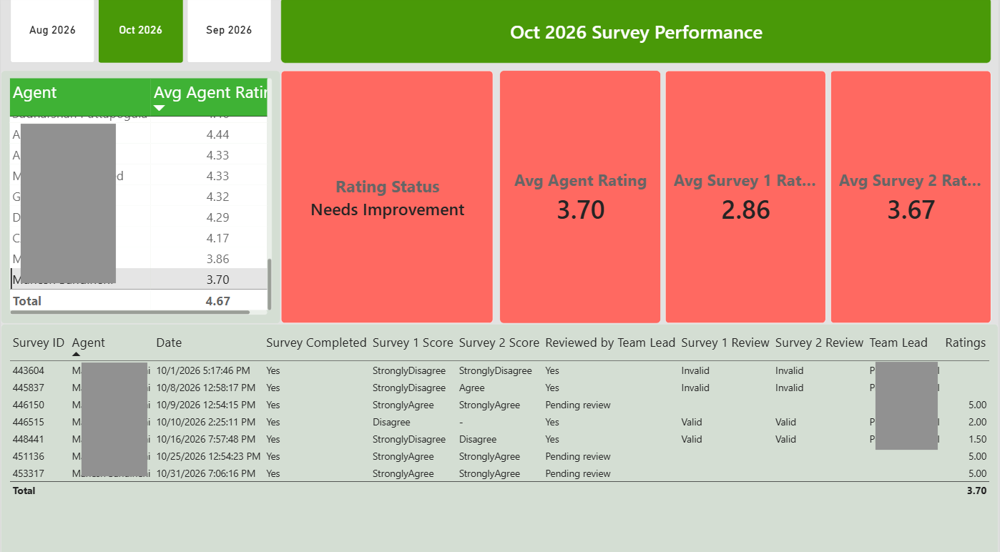
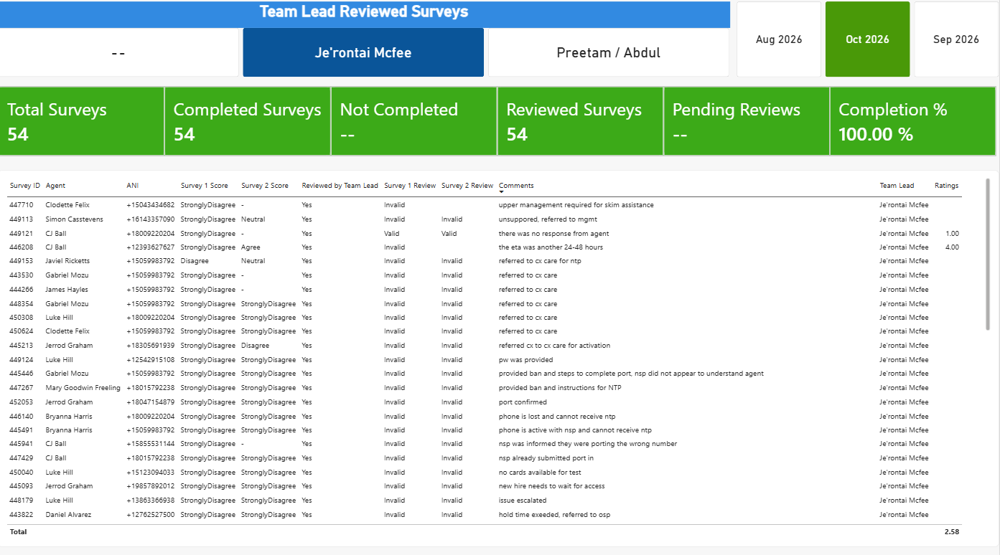
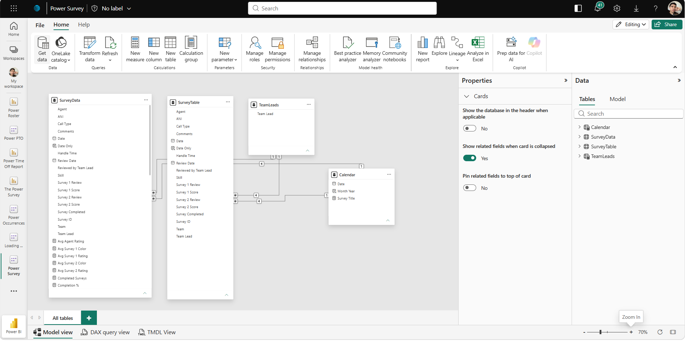

Detailed Case Study
This Power BI solution gives leadership a centralized view of customer satisfaction survey performance across both U.S. and India support centers. It combines CSAT outcomes, team-level trends, and quality assurance validations to support faster coaching and decision-making.
Business Objective
Evaluate customer feedback across support centers, identify top-performing agents, and provide actionable insights that improve service quality and customer satisfaction.
Main Dashboard — Executive CSAT & Survey Monitoring
Tab 2 — Agent Performance & Quality Review
Tab 3 — Team Lead Review & QA Governance
Semantic Model & Data Architecture
Key Metrics Tracked
Business Impact
The platform improved visibility into customer experience and quality validation, enabling targeted coaching, stronger accountability, and more accurate performance measurement across global support operations.
Additional Screens





